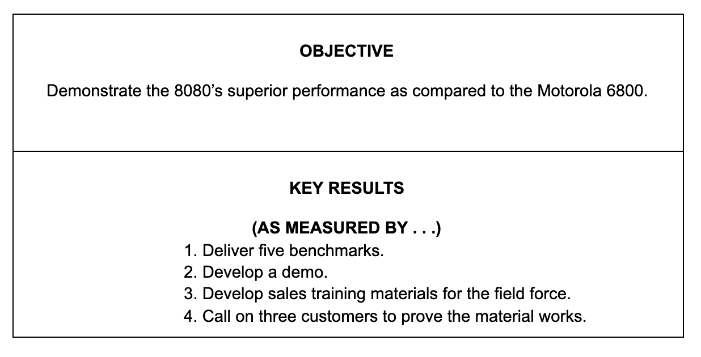

The goal-setting tool Objectives and Key Results (OKRs) was created in the 1970s by Andy Grove of Intel.
Andy Grove was a Hungarian Jew who survived the Nazi regime, only to see his country occupied by the Soviet Union after the defeat of Nazi Germany. The twenty-year-old Grove escaped from Hungary after the 1956 Hungarian Uprising was put down by the Red Army and travelled to the United States with the help of the International Rescue Committee.
After earning his doctorate in chemical engineering at the University of California, Berkeley, Grove joined Fairchild Semiconductors, where he gained experience in the early development of integrated circuits. When his colleagues Robert Noyce and Gordon Moore left Fairchild to found a new company, Intel, Grove joined them, becoming the company’s third employee. He went on to become Intel’s chairman and CEO.
Grove led Intel’s dramatic and painful exit from the manufacture of memory chips and its emergence as the world’s leading manufacturer of microprocessors for personal computers. Described as “the greatest manager of his or any era”, Doerr developed the OKR system, which he described in his 1983 book, High Output Management.
OKRs could be said to be a development of ‘Management by Objectives’ (MBO), which was first set out in a systematic way by the management guru Peter Drucker in his 1954 book, The Practice of Management.
MBO was defined as a set of clearly defined company objectives that are agreed on by management and employees. The system was adopted by Bill Hewlett and David Packard in the early days of Hewlett-Packard. As David Packard wrote in The HP Way, “Management by objective […] refers to a system in which overall objectives are clearly stated and agreed upon, and which gives people the flexibility to work toward those goals in ways they determine best for their own areas of responsibility. It is the philosophy of decentralization in management, and the very essence of free enterprise.”
Grove makes reference to the principle of MBO when he says in High Output Management:
“A successful MBO system needs only to answer two questions:
1. What do I want to achieve? (The answer will be as a basis of Objective)
2. How can I reach it? (The answer gives us Key Results or milestones).”
John Doerr and OKRs
If Grove is the father of OKRs, the man most responsible for spreading the practice of the management system throughout Silicon Valley, and later through global industry, was John Doerr, currently chairman of world-famous venture capital firm, Kleiner Perkins.
John Doerr was offered an internship at Intel in the summer of 1975, while he was between terms at Harvard Business School. In his 2018 book, Measure What Matters, Doerr remembers being struck by Grove’s focus on execution. “It almost doesn’t matter what you know,” Grove told new members of staff.
“It’s what you can do with whatever you know or can acquire and actually accomplish [that] tends to be valued here.”
Grove later guaranteed a position for Doerr at Intel when he graduated from Harvard. When Doerr started work at Intel, the company was developing its 8080 microprocessor and Doerr was introduced to Grove’s system of OKRs.
Doerr’s first role at Intel was writing benchmarks. He later moved into sales. In his 2018 book, Measure What Matters, Doerr recalls his first OKR at Intel:

The spread of OKRs
In 1980, Doerr moved to Kleiner Perkins. Doerr’s work at Kleiner helped to fund and accelerate the growth of some of Silicon Valley’s most famous companies: Compaq, Netscape, Symantec, Sun Microsystems, Amazon, Intuit, Google and many others.
Doerr invested $12million of Kleiner’s capital to buy 12% stake in Google in 1999, when the company was still in its first year. It was, says Doerr, his “biggest bet in nineteen years as a venture capitalist.” He set out to persuade the company to adopt OKRs as a way of ensuring the company achieved its ambitious plans for growth.
“Google brimmed with big ideas,” writes Doerr in Measure What Matters. “The founders were quintessential visionaries, with extreme entrepreneurial energy. What they lacked was management experience. For Google to have real impact, or even to reach lift-off, they would have to learn to make tough choices and keep their team on track.”
Doerr made a 90-minute presentation to about 30 Google staffers – which Doerr describes as “pretty much the whole company at the time” – including Larry Page, Sergei Brin, Melissa Mayer, Susan Wojcicki and Salar Kamangar.
His first slide defined OKRs as “A management methodology that helps to ensure that the company focuses efforts on the same important issues throughout the organization.”
Doerr went on to describe the essentials of OKRs:
“An OBJECTIVE, I explained, is simply WHAT is to be achieved, no more and no less. By definition, objectives are significant, concrete, action oriented, and (ideally) inspirational. When properly designed and deployed, they’re a vaccine against fuzzy thinking—and fuzzy execution.
“KEY RESULTS benchmark and monitor HOW we get to the objective. Effective KRs are specific and time-bound, aggressive yet realistic. Most of all, they are measurable and verifiable. […] You either meet a key result’s requirements or you don’t; there is no grey area, no room for doubt. […] Where an objective can be long-lived, rolled over for a year or longer, key results evolve as the work progresses. Once they are all completed, the objective is necessarily achieved. (And if it isn’t, the OKR was poorly designed in the first place.)”
In his introduction to Doerr’s book, Larry Page says that, “OKRs kept me and the rest of the company on time and on track when it mattered the most.”
The use of OKRs was adopted by many of Silicon Valley’s now famous names: AOL, Dropbox, LinkedIn, Oracle, Slack, Spotify, Twitter… and, as Doerr points out, by companies in very different industries, including Anheuser-Busch, BMW, Disney, Exxon and Samsung.